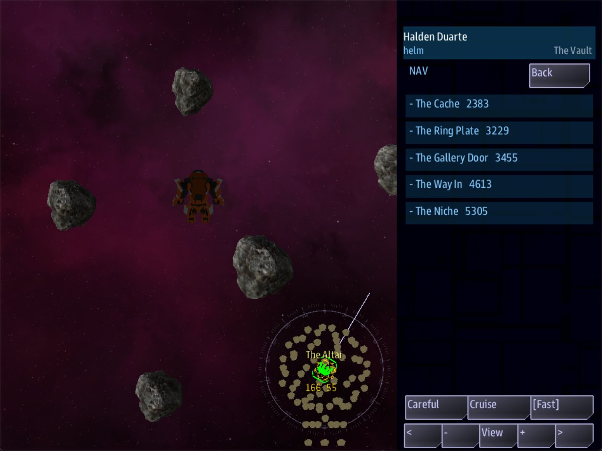

Class 4, Lecture 8 - EVA¶
What you will have at the end¶
The crew goes outside.
The ship stops at the door of The Hollow. One of the crew opens the handheld, presses SUIT UP, and is out in a suit at The Way In. The suit flies itself to the places you named in Lecture 3. At the altar, the words you wrote in Lecture 4 are read at last.
A slab lies across the door of the built room. The crew member cuts through it, and a step of your story is finished. Comms opens the niche. The crew member brings out the bowl, and the last word of Lecture 7 is said by the game, and no longer by Comms. Then everybody comes aboard, the ship flies home, and the game is won.

A crew member out in a suit, in The Vault: the view on the left, Nav's list of places on the right.You will add to mission.amd. You will not touch story.mast. Going outside needs no
line of yours at all: the game offers it at any ruin you build.
The video¶
About 7 minutes. Subtitles are available in the player.
Before you start¶
MyRuinas Lecture 7 left it, with Lecture 5 done as well: the four-step story, the side story and the cutscene, and from Lecture 5 the canisters in The Cache, the bowl in The Niche, and the two quests What the Survey Left and The Bowl.sbs lint MyRuinsaysclean.- VS Code with the mission folder open, a command prompt open in
C:\Cosmos\data\missions, and the game closed.
What your file looks like depends on the order you worked in.
| You did | Your mission.amd |
|---|---|
| Lectures 1 to 4, then 6 and 7, then 5 | 461 lines. Lecture 5's two quests are the last records of the Quests section |
| Lectures 1 to 7 in order | 461 lines. Lecture 5's two quests sit just below Marker One |
| Lectures 1 to 4, 6 and 7, and not 5 | 409 lines. Do Lecture 5's Steps 2 to 6 now, on the file you have |
Nothing on this page depends on which of the first two you have. story.mast is Lecture
6's, with its card, 116 lines.
This lecture needs two people, or one person at two consoles. One goes outside. The other stays at Comms, because near the end Comms has to answer a call.
Step 1 - What the game does by itself¶
Going outside is called EVA. In a mission made from the template, most of it is already there.
| What happens | Who does it | What you wrote for it |
|---|---|---|
| The crew is offered a way out, at the ruin's door | The game | Roles: entrance on The Way In, in Lecture 3 |
| A crew member who takes it is put in a suit, at that place | The game | Nothing |
| The suit is given a list of places it can fly to | The game | Your Point: records, from Lecture 3 |
| The suit flies to the one that is picked | The game | Nothing |
| The place's scene opens when the suit arrives | The game | Scene: on the place, and the scene, in Lecture 4 |
| The crew member can read the place | The game | Scan: on the place, in Lecture 4 |
A step that says reach altar 600 finishes when the SUIT gets there |
The game | The step, in Lecture 7 |
| A way inside is shut, until somebody cuts it open | You, today | A Barrier: record |
| Cutting it open finishes a step | You, today | A step that waits for a word the game sends |
| Taking the bowl finishes a step | You, today | The step from Lecture 7, and one change to who says the word |
The offer¶
The game offers SUIT UP while your ship is within 3000 of the ruin's entrance. The
entrance is the place with Roles: entrance. In your file that is The Way In.
| The ship is | The crew is offered |
|---|---|
| More than 3000 from The Way In | Nothing |
| Within 3000 | SUIT UP, on the handheld's Boarding Party app |
| Out past 3450 again, with everybody aboard | Nothing. The offer is taken back |
| Anywhere, with somebody still outside | SUIT UP still. The offer waits for them |
The step Find the Way In asks the ship to come within 1000. A crew that has finished it is well inside 3000.
The suit¶
A crew member in a suit is on a console of their own. It has the suit in view, and a handheld with five apps.
| App | What it is for |
|---|---|
| Nav | The list of places. Picking one sends the suit there. Also how fast to fly: Careful, Cruise or Fast |
| Act | What a place says: its scene, with the answers to choose from |
| Scan | The room the suit is in, and the Scan: line of the nearest place |
| Fire | What is within reach, and two tools: BEAM, which cuts, and TETHER, which hauls |
| Crew | Who else is outside, and the way home: Come aboard |
Three things to know about the list of places.
- A suit flies to places, and to nothing else. It cannot be steered by hand. If the crew has to stand somewhere, there has to be a place there.
- A
Hidden: yesplace is not on the list until somebody has been within 1200 of it, or an answer has revealed it. That is whatHidden:was for all along. - The tools reach 600. A thing further off than that is not offered.
Step 2 - A place to stand, and a way that is shut¶
A barrier is a ball of blocked space. Every way through it is shut until it is opened.
It needs a place beside it. The suit can only fly to places, and its cutter reaches 600. So first a place on the near side of the door, then the slab.
Find The Cairn, the last record of your Relics section. Leave one blank line below its description, and type:
### [The Gallery Door](gallery_door)
---
Relic: hollow
Point: 3000, 0, -650
Roles: gallery_door
Scan: A slab of the wall has come down across the doorway. It is cracked through the middle.
---
The Nave side of the doorway into the Gallery. Where a crew member stands to cut.
### [The Fallen Slab](slab)
---
Relic: hollow
Barrier: 3000, 0, -1100, 320
Clear with: beam
---
A slab of the Gallery's own wall, down across its doorway.
| Line | What it means |
|---|---|
Barrier: 3000, 0, -1100, 320 |
Where the middle of the ball is, and how big. Three numbers and a size, like a Chamber: |
Clear with: beam |
What opens it: the cutter on the suit's Fire app |
The numbers put the slab where The Nave meets The Gallery. The passage there is 300 wide, and the ball is 320, so it fills the doorway. The Gallery Door is 450 from the middle of the slab: inside the cutter's reach, and outside the ball.
The Gallery Door has a Scan: line and no Scene:. A crew member who arrives there reads
that line.
What a barrier can be opened with:
Clear with: |
The crew member |
|---|---|
beam |
Cuts it. Twelve seconds |
tether |
Hauls it clear. Twelve seconds |
check engineering 9 |
Works it loose by hand, on a roll of the dice. Lecture 9 uses this |
| No such line | Cuts it. A barrier with no Clear with: line takes the beam |
Run lint. You want clean.
Step 3 - The slab is a step of the story¶
When a barrier opens, the game sends a word: the barrier's key, then _opened. Yours is
slab_opened. It is the twin of hollow_taken.
Find The First Marker in your arc. Leave one blank line below its description, and type:
#### [Cut Through](cut)
---
Scope: shared
Starts when: revealed
Objective: Send someone out to cut the slab across the Gallery door
Done when: signal slab_opened
Reward: 100 credits
Then: reveal survey/second
Part of: survey
Required: true
---
A slab has come down across the way into the built room. Somebody has to go out there and cut it.
-  Suit up at The Way In, while the ship is close
-  Fly to The Gallery Door, and cut the slab with the beam
The cut takes twelve seconds. The ship's own beams can break the slab as well.
The two lines that start with a hyphen are a list, and each one has a picture for its bullet.
| You type | The quest list draws |
|---|---|
- (a hyphen, a space) at the start of a line |
A bullet |
 straight after it |
A small picture of a person, in place of the dot |
person, flame |
The picture's name. A name the game does not know draws nothing, and lint does not check it |
Other names you can use: wrench, antenna, chest, hourglass, magnifier,
first-aid, flag, skull. Leave a blank line below the list: a line typed straight
under a bullet joins that bullet.
Then change one line in The First Marker, so that it leads to the new step:
The chain is now: the way in, the altar, the slab, the niche, the bowl.
The word is sent however the slab is opened. A crew member cuts it. Or the ship shoots it: a shut barrier is a real thing with a little hull, and the ship's own beams can break it. Either way the step finishes.
Step 4 - The bowl, by hand¶
In Lecture 7, Comms said hollow_taken in a call. Since Lecture 5 the game says it, when
the bowl is taken. So today Comms stops saying it.
But Comms keeps a job. A ship can fly into The Gallery too: the walls of a ruin do not hold a ship. A ship that scooped up the bowl early would use up the word before your last step was listening, and the story could never be finished. So the bowl will not be in the niche until the story is ready. Comms opens the niche, and then the bowl is there.
Three changes.
First, the two answers. In the Dialogue section, find Rook at the Niche and What It Is. Each has this line:
Change both to:
Second, the niche. In the Relics section, add two lines to the fence of The Niche:
### [The Niche](niche)
---
Relic: hollow
Point: 3000, 0, -2500
Roles: niche, relic_piece
Hidden: yes
Item: stone_bowl
Starts when: signal niche_open
Scan: A square recess, cut later than the room. A stone bowl sits at the back of it.
---
A recess at the back of the Gallery. Easy to miss.
Starts when: signal niche_open is from Lecture 5's exercise. The bowl is not placed
until that word is heard. niche_open is a word of your own.
Third, the step. In What Rook Put Back, change the Objective: line:
Leave Done when: signal hollow_taken exactly as it is.
And delete one record: The Bowl, the quest from Lecture 5. The arc's last step does
its job now. Delete from its ### line to the end of its description.
How the end of the story runs now:
| What happens | Because of |
|---|---|
| A suit, or the ship, comes within 400 of The Niche | The Second Marker finishes. What Rook Put Back starts |
| Rook's second recording is waiting on Comms | The step's Action: |
| Comms chooses Open the niche. | ; signal niche_open |
| The bowl is in the niche | Starts when: signal niche_open |
| The crew member takes the bowl | The game sends hollow_taken. The step finishes |
The step is always listening before the bowl exists. Nobody can take it too early.
Step 5 - Coming home¶
Taking the bowl should not end the game with somebody still outside. So the story ends at the station.
Add one line to What Rook Put Back, under its Action: lines:
Then leave one blank line below its description, and type a sixth step:
#### [Carry It Home](home)
---
Scope: shared
Starts when: revealed
Objective: Bring everyone aboard, and return to within 1000 of DS 1
Done when: reach station 1000
Reward: 100 credits
Part of: survey
Required: true
---
It is aboard. Take it back to DS 1.
Count heads before Helm turns for home. Anybody still in a suit is still out at The Hollow.
It is the fifth step from Lecture 7's exercise, with a new objective and a second
paragraph. The Win: line stays on the arc. The game is won when the last required step
is done, and that is now this one.
Step 6 - The clock¶
A suit is slower than a ship. Twenty minutes is not enough for this story. In The Hollow Survey, change two lines: the clock in its fence, and the last paragraph of its description.
The haze round The Hollow is thickening. Once it closes, no ship will find the way in. You have forty minutes.
In the stand-in this page was checked on, a suit at Cruise took about three minutes from The Way In to The Altar. Nobody has timed the whole story with people. If forty minutes is tight at your table, make it longer.
Your finished pieces¶
In the arc, The First Marker changed, and the new step below it:
#### [The First Marker](first)
---
Scope: shared
Starts when: revealed
Objective: Take the ship into The Vault, as far as the altar
Done when: reach altar 600
Reward: 50 credits
Then: reveal survey/cut
Part of: survey
Required: true
---
An old survey marker is transmitting from the far room.
#### [Cut Through](cut)
---
Scope: shared
Starts when: revealed
Objective: Send someone out to cut the slab across the Gallery door
Done when: signal slab_opened
Reward: 100 credits
Then: reveal survey/second
Part of: survey
Required: true
---
A slab has come down across the way into the built room. Somebody has to go out there and cut it.
-  Suit up at The Way In, while the ship is close
-  Fly to The Gallery Door, and cut the slab with the beam
The cut takes twelve seconds. The ship's own beams can break the slab as well.
The end of the arc:
#### [What Rook Put Back](take)
---
Scope: shared
Starts when: revealed
Objective: Have Comms open the niche, then bring out what is in it
Done when: signal hollow_taken
Reward: 300 credits
Action:
- rook hails rook_niche
Then: reveal survey/home
Part of: survey
Required: true
---
The second marker is playing. Hear it out, and bring aboard what is in the niche.
Rook's team took it from the altar forty years ago, and then they carried it back. His recordings are the only account of why.
#### [Carry It Home](home)
---
Scope: shared
Starts when: revealed
Objective: Bring everyone aboard, and return to within 1000 of DS 1
Done when: reach station 1000
Reward: 100 credits
Part of: survey
Required: true
---
It is aboard. Take it back to DS 1.
Count heads before Helm turns for home. Anybody still in a suit is still out at The Hollow.
At the end of the Relics section:
### [The Gallery Door](gallery_door)
---
Relic: hollow
Point: 3000, 0, -650
Roles: gallery_door
Scan: A slab of the wall has come down across the doorway. It is cracked through the middle.
---
The Nave side of the doorway into the Gallery. Where a crew member stands to cut.
### [The Fallen Slab](slab)
---
Relic: hollow
Barrier: 3000, 0, -1100, 320
Clear with: beam
---
A slab of the Gallery's own wall, down across its doorway.
In the Dialogue section, the two scenes at the niche:
### [Rook at the Niche](rook_niche)
---
Speaker: rook
When: hail
Title: A second recording
Priority: 5
---
% Marker two. This is where we put it back. We could not keep it.
% Marker two, the Gallery. It is in the niche. We carried it out once, and then we carried it back.
- [What is it?](rook_what)
- [Open the niche.]() ; signal niche_open
### [What It Is](rook_what)
---
Speaker: rook
---
% A bowl. Stone, like the table. It sat on the altar longer than there have been people to count.
- [Open the niche.]() ; signal niche_open
The whole file is in example\mission.amd. It is 501 lines long.
Step 7 - Check it¶
You want clean under mission.amd.
Lint names every mistake in the first two tables. The word in the last column is at the end of the line lint prints.
The slab:
| Mistake | What the game does | Lint says |
|---|---|---|
Clear with: cutter (a word of your own) |
The Fire app lists the slab and says (wrong tool) whichever tool is in hand. No crew member can open it |
relic-unknown-clear |
#### [The Fallen Slab](slab) (four hashes) |
There is no slab. The way to the niche is open, and Cut Through never finishes | relic-part-level |
Barrier: 3000, 0, -1100 (no size) |
There is no slab at all. The suit flies straight to the niche, and Cut Through can never finish | relic-short-part |
Done when: signal slab_open (the word misspelled) |
The slab is cut, and Cut Through never finishes. The story stops there | unfired-signal |
Done when: signal gallery_door_opened (the place, not the slab) |
The same | unfired-signal |
Done when: signal fallen_slab_opened (the name, not the key) |
The same | unfired-signal |
The bowl:
| Mistake | What the game does | Lint says |
|---|---|---|
Starts when: signal niche_opn on The Niche (misspelled) |
Comms opens the niche, and no bowl appears. What Rook Put Back never finishes | unfired-signal, and signal-no-route twice |
The Starts when: line left off The Niche |
The bowl is there from the start. A ship that flies in and takes it early has spent the word. What Rook Put Back never finishes | signal-no-route, twice |
The two answers left as ; signal hollow_taken |
Comms finishes the step from the bridge. Nobody goes for the bowl, and the niche stays empty | unfired-signal |
No Then: reveal survey/home on What Rook Put Back |
The bowl is taken, Carry It Home never appears, and the game cannot be won | never-revealed |
Starts when: signal slab_opened on The Niche |
The slab is cut, the word is sent, and the bowl never appears. A place hears the words YOUR file sends, from an answer or a Then: line. It does not hear the game's own three |
signal-no-route, twice: nothing hears niche_open now |
What lint cannot see¶
Lint says clean for everything in this table. The first two are the ones to check by
eye every time you write a barrier.
| You wrote | What happens | What tells you |
|---|---|---|
| No place within 600 of the slab (The Gallery Door deleted) | Nav says No way through to niche from here. From every place on the list, the Fire app says Nothing in reach. Fly closer. No crew member can open the slab |
Those two lines |
The slab is not across the way: Barrier: 3000, 0, -300, 100 |
The suit flies to the niche past it. Cut Through waits until somebody cuts the slab anyway | Nothing |
Part of: and Required: left off Carry It Home |
The game is won at the niche, as the bowl is taken, with the crew member still outside | Nothing |
| Nothing wrong: Helm flies home with somebody still outside | The game is won with them outside. reach station asks about the ship |
Nothing |
| A crew member flies on from the altar without choosing an answer that ends the scene | The scene stays open on their Act app, wherever they go | The Act app |
Five things that look like mistakes and are not:
- No
Clear with:line on a barrier. The beam opens it, the same asClear with: beam. - A
Scan:line on a room. The Scan app shows it under the room's name, above the nearest place. - Lecture 5's quest The Bowl left in the file. It finishes with the step and pays its 200 as well.
- No place with
Roles: entranceat all. The offer is measured from the ruin'sLoc:, the suit appears there, and so does the name on the map. For The Hollow that is the middle of The Mouth. In this mission keep it all the same: Find the Way In waits onreach entrance, and without the role lint warnsrole-nothing-wears. - A
; signal niche_openthat is never heard, because the crew presses Back. Back puts the call in the list again, and the niche waits with it.
One thing the game does that is not your mistake: with the suit at the niche, the Fire and Scan apps list The Niche itself, as if the place were a thing to haul. It has been reported. Leave it alone.
Step 8 - Play it¶
Start the game with a server, a Helm console and a Comms console:
The person at Helm flies the ship to the door, and then goes outside. The person at Comms stays.
- Fly to The Hollow. As the ship comes up to the door, Find the Way In completes. Stop the ship there.
- On the Helm console, open the handheld and then the Boarding Party app. It names The Hollow, and its button reads SUIT UP. Press it. That console now belongs to a crew member in a suit, at The Way In.
- Open Nav. The list has The Ring Plate, The Gallery Door, The Cache and The Altar. The Niche and The Cairn are hidden, so they are not there yet. Pick The Altar. The suit turns and flies: through the ring, across The Nave, up the tunnel.
- On the way, Comms gets Lecture 6's call from the ring. A suit sets off a beat the same as a ship does.
- At the altar, three things happen together. The First Marker completes and Cut Through appears. Comms gets Rook's recording at the altar. And on the suit's Act app, your scene from Lecture 4 opens: the stone table, and two answers. Choose one.
- Open Scan. It names The Vault, and under it The Altar with your
Scan:line. - On Comms, play the altar recording through and choose Mark the Gallery. The Niche
joins the suit's list. Pick it. Nav answers:
No way through to niche from here. - Pick The Gallery Door. When the suit arrives, its
Scan:line is added to the Act app, because the place has no scene. - Open Fire. The list has one row:
The Fallen Slab 450. BEAM is the tool in hand. Select the row, and press it again. A banner counts down:BEAM - The Fallen Slab, 12s. - Twelve seconds later the way is open. Cut Through completes, and The Second Marker appears. Pick The Niche on Nav. This time the suit goes.
- At the niche, The Second Marker completes and What Rook Put Back appears. Comms has a call at the top of its list: Surveyor Rook - A second recording. On Comms, choose Open the niche.
- The bowl is in the niche, and the suit is beside it. The crew member takes it by
touching it. The crew is told
Pickup: The Stone Bowl. The step completes, and Carry It Home appears. - Open Crew and press Come aboard. The console is back at the post it left.
- Fly to DS 1. Within 1000 of the station the game ends with your
Win:sentence.
If a thing lies further from the suit than arm's length, the Fire app lists it, and TETHER reels it in. In the stand-in the bowl was taken as the suit arrived, before there was anything to reel.
What the side is paid:
| After | Credits so far |
|---|---|
| Find the Way In | 50 |
| The First Marker | 100 |
| Cut Through | 200 |
| The Second Marker | 300 |
| What Rook Put Back | 600 |
| Carry It Home | 700 |
When you stop, open mast.runtime.log in your mission folder. It should be empty.
How this page was checked, and what nobody has done. No person has flown a suit in this mission. The game was played by a script, with no screen. The script connected a stand-in console, pressed the game's own SUIT UP button, picked places from the suit's list, chose answers, pressed the Fire app's own tool on the slab, answered the calls and pressed COME ABOARD. One leg, The Way In to The Altar, was flown by the suit's own autopilot. For the other legs the script put the suit at the place. Every name of an app, a button and a banner on this page is read from the game. What they look like, and where they are on the screen, nobody has seen. If your screen differs, the screen is right.
If something goes wrong¶
| What you see | Likely cause |
|---|---|
| The Boarding Party app does not offer SUIT UP | The ship is more than 3000 from The Way In. Come closer |
| A console closes, or stops, when somebody suits up | See the box below |
| The suit's list has no Niche | It is hidden. Comms has to choose Mark the Gallery., or a suit has to come within 1200 of it |
Nav says No way through to niche from here. |
The slab is shut. Go to The Gallery Door and cut it |
At The Gallery Door, Fire says Nothing in reach. Fly closer. |
The place is more than 600 from the middle of the slab. Check both sets of numbers against Step 2 |
The slab's row says (wrong tool) |
The tool in hand is not the one after Clear with:. Take the other tool. If no tool works, the word after Clear with: is not beam, tether or check, and lint names it |
| The slab is cut and Cut Through does not finish | The word after Done when: signal is not slab_opened. Lint names it |
| Comms chose Open the niche. and there is no bowl | The word on the two answers is not the word after Starts when: signal on The Niche. Lint names it |
| The bowl is aboard and What Rook Put Back never finishes | The bowl was taken before the step started. The Niche has no Starts when: line. Lint warns about the two answers |
| Comms finished the last step with nobody near the niche | The two answers still say ; signal hollow_taken |
| The game is won at the niche | Carry It Home has no Part of: and Required: lines |
| The bowl is aboard and nothing more happens | What Rook Put Back has no Then: reveal survey/home. Lint names it |
| The altar's scene does not open for the suit | The same causes as in Lecture 4: the key after Scene:, or the scene itself. Lint names both |
| The game ends in a loss while the crew is still inside | The clock. Make Fails when: longer |
If a console closes when somebody suits up. Your game is older than this lecture. Older builds of Artemis Cosmos close a console that is handed a ship the moment the ship is made, which is what SUIT UP does. It is not your file. Update the game, and get today's libraries to go with it:
Now the console becomes the suit straight away, and stays open.
Exercise¶
- A slab an engineer can work loose. Change the slab's line to:
Play. With the suit at The Gallery Door, the Fire app has a third tool, WORK. A try takes six seconds and rolls a ten-sided die, plus the crew member's skill, against 9. The roll is written in the Act app either way. After a miss, the same person waits twenty seconds before trying again. The beam still works.
- A slab that opens by itself. Take
Clear with:off the slab and write instead:
Play. The slab opens when a suit, or the ship, comes within 400 of The Gallery Door.
The word slab_opened is sent just the same. The words after Opens when: are the
ones a beat uses. Put Clear with: beam back afterward.
-
The canisters, by hand. Play, go outside, and pick The Cache on Nav. The suit takes the canisters as it arrives. They are counted for the ship: What the Survey Left completes, and the hold has three.
-
Break it where lint can see. Change
Done when: signal slab_openedtoDone when: signal slab_open. Run lint and read the warning. Put it back. -
Break it where lint cannot see. Delete the record The Gallery Door. Run lint:
clean. Play, and go outside. The slab is on nobody's list. No place is within 600 of it, so the cutter is never offered it. Put the record back.
Checkpoint¶
You are done when all six are true:
sbs lint MyRuinshowsmission.amdasclean.- With the ship at the door, the Boarding Party app offers SUIT UP.
- A suit at The Altar opens your scene from Lecture 4, and Scan shows your
Scan:line. - Cutting the slab completes Cut Through, and no line of yours sent the word.
- The bowl is not in the niche until Comms chooses Open the niche.
- With everybody aboard and the ship back at DS 1, the game ends with your
Win:sentence and the side has been paid 700.
Next¶
Lecture 9: EVA somewhere else. The same suit and the same tools, outside a station, on a repair job.
Further reading¶
- "Relic interiors" in the library documentation: "Going inside", "The suit", "What a place says", "How it is navigated" and "A way that is SHUT".
relics\voice.amdin Storm's Beacon: a shipped ruin with a hatch to cut, a grate to work loose by hand, and a second way round. Read it for the shape. Its side stories are written in an older spelling, and are not something to copy yet.
Download this lecture's finished files (a zip of its example folder).